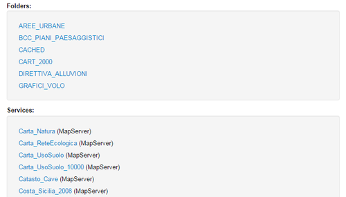
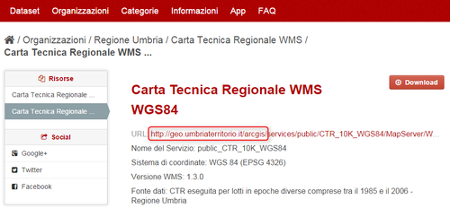
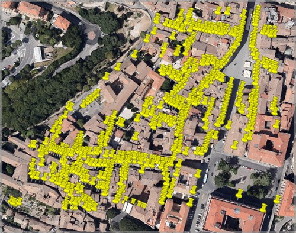

Diversi geoportali, piccoli e grandi, di Pubbliche Amministrazioni da ogni parte del mondo, sono basati su tecnologia ESRI ArcGIS. All’utente di solito viene esposta un’interfaccia di consultazione del catalogo dei dataset (come quella del geoportale della Regione Siciliana) e/o l’accesso diretto ai dati e alla loro rappresentazione tramite servizi OGC standard come WMS, WFS e WCS.
Ma ci sono diverse altre caratteristiche interessanti rese disponibili da queste tecnologie e che molto spesso ignoriamo, la cui conoscenza ci consente di accedere ad un numero molto più ampio di informazioni e dati. Tutto questo oggi è a maggior forza interessante, grazie alle politiche Open Data realizzate da molte Pubbliche Amministrazioni e anche perché dal 19 marzo 2013i ”tutti i dati e documenti che le pubbliche amministrazioni pubblicano con qualsiasi modalità, senza l’espressa adozione di una licenza d’uso, si intendono rilasciati come dati aperti (open data by default)” (cit. dati.gov.it, mentre dal punto di vista normativo si tratta dell’articolo 52, comma 2 del CAD).
In questo post sottolineerò alcuni elementi relativi all’accesso ai dati tramite query via interfaccia REST (più propriamente tramite API REST).
Introduzione
Le API REST di ArcGIS – REST è l’acronimo di Representational State Transfer - forniscono una semplice interfaccia di accesso web ai server cartografici di questa casa software, sia ai dati/servizi che ad alcuni processi. Il tutto è quindi accessibile tramite una serie di URL gerarchici, che identificano ciò a cui si vuole accedere. L’URL di default di accesso ha di _default _questa struttura:
http://<host>:/arcgis/rest/services
Ad esempio quello della Regione Siciliana è questo:
http://map.sitr.regione.sicilia.it/ArcGIS/rest/services
E aprendo l’indirizzo sono elencati dati e servizi disponibili in questo server.

La documentazione ufficiale generale è molto ricca e vasta e non aggiungerò altri dettagli generici.
A seguire invece alcuni esempi di query via ArcGIS REST API, in modo da apprezzarne la ricchezza e le modalità di accesso.
Interroghiamo una risorsa
Per gli esempi di questo articolo farò riferimento alla Regione Umbria, che ha aperto da poco i suoi dati cartografici. Dal suo portale open data possiamo leggere l’URL pubblico del server ArcGIS.

Si legge
http://geo.umbriaterritorio.it/arcgis/
Bisogna aggiungere (vedi sopra) “rest/services/” e abbiamo
http://geo.umbriaterritorio.it/arcgis/rest/services/
A questo punto non resta che sfogliare un po’ la directory pubblica e scegliere un layer su cui eseguire una query. Userò il dataset dei “NUMERI CIVICI”, che si raggiunge facendo click su Public > ECOGRAFICO_CATASTALE_WGS84 (MapServer) > NUMERI CIVICI.
Scorrendo la pagina verso il basso è visibile il tasto “Query“, tramite il quale è possibile interrogare il dataset.

Per lanciare la prima interrogazione devo inserire almeno un criterio di ricerca. Ad esempio il numero civico con “ID=1″ (ogni elemento ha sempre un identificativo numerico associato). La pagina html con il risultato dell’interrogazione mi fornisce informazioni sia sugli attributi che sulla geometria dell’elemento.

Posso fare allora una query per attributo: tutti gli elementi che contengono nel campo “DESCR_S49″ la stringa “CORPOSANO”. Nell’interfaccia leggiamo che ci sono 47 record che soddisfano questa condizione e l’output è in HTML. Ci sono però altri formati di output tra cui KML e JSON; questo l’output in JSON della stessa query.

Questi due formati quindi mostrano nei fatti, come una query REST su server ArcGIS sia un’ulteriore modalità di accesso al dato grezzo.
Query spaziale
E’ possibile eseguire anche delle interrogazioni spaziali di complessità variabile. Ad esempio posso estrarre tutti i civici che ricadono tra queste coordinate 12.384356,43.108511,12.388869,43.110765 (<xmin>,<ymin>,<xmax>,<ymax>).

Posso farne il download con GDAL/OGR (vedi sotto) e ottenere rapidamente i dati in formato spaziale e al contempo visualizzarne rapidamente una loro rappresentazione.

Accesso tramite GDAL/OGR a una query
La libreria GDAL/OGR ha i driver di accesso in lettura e scrittura al formato GeoJSON. Uno degli output delle query di sopra è proprio JSON e questa libreria lo riesce a leggere nativamente proprio come GeoJSON.
L’ultima query si effettua chiamando questo lungo URL:
http://geo.umbriaterritorio.it/ArcGIS/rest/services/Public/ECOGRAFICO_CATASTALE1_WGS84/MapServer/0/query?geometry=&geometryType=esriGeometryPoint&inSR=&spatialRel=esriSpatialRelIntersects&relationParam=&objectIds=&where=DESCR_S49+LIKE+%27%25CORPOSANO%25%27&time=&returnCountOnly=false&returnIdsOnly=false&returnGeometry=true&maxAllowableOffset=&outSR=&outFields=*&f=pjson
Nell’indirizzo di sopra sono visibili tutti i parametri disponibili per effettuare un’interrogazione, ma sopra abbiamo valorizzato soltanto la stringa di testo da ricercare in un determinato campo (parametro “where”) e il formato di output (parametro “f”). Questo URL fa da source per GDAL/OGR. Se voglio avere tutte le informazioni su questa sorgente di dati vettoriali userò il classico ogrinfo:
ogrinfo -ro "http://geo.umbriaterritorio.it/ArcGIS/rest/services/Public/ECOGRAFICO_CATASTALE1_WGS84/MapServer/0/query?geometry=&geometryType=esriGeometryPoint&inSR=&spatialRel=esriSpatialRelIntersects&relationParam=&objectIds=&where=DESCR_S49+LIKE+%27%25CORPOSANO%25%27&time=&returnCountOnly=false&returnIdsOnly=false&returnGeometry=true&maxAllowableOffset=&outSR=&outFields=*&f=pjson" OGRGeoJSON
“OGRGeoJSON” è per GDAL/OGR il nome predefinito del layer di una sorgente GeoJSON. “-ro” perché imposto l’accesso in sola lettura.
Se voglio convertire in ArcView Shapefile l’output di questa query userò ogr2ogr:
ogr2ogr CORPOSANO.shp "http://geo.umbriaterritorio.it/ArcGIS/rest/services/Public/ECOGRAFICO_CATASTALE1_WGS84/MapServer/0/query?geometry=&geometryType=esriGeometryPoint&inSR=&spatialRel=esriSpatialRelIntersects&relationParam=&objectIds=&where=DESCR_S49+LIKE+%27%25CORPOSANO%25%27&time=&returnCountOnly=false&returnIdsOnly=false&returnGeometry=true&maxAllowableOffset=&outSR=&outFields=*&f=pjson" OGRGeoJSON
Come esempio, riporto qui il download fatto con GDAL/OGR nei formati ArcView Shapefile, GeoJSON e KML.
Web mapping a partire da query
Queste query possono essere visualizzate in maniera molto efficace anche in un’interfaccia di web mapping. Sia a partire dal salvataggio dell’output, che tramite chiamata diretta in realtime. La cosa è inoltre resa semplice da una bella libreria rilasciata in open source da ESRI e basata su Leaflet: http://esri.github.io/esri-leaflet.
La query di sopra (quella sulla stringa “CORPOSANO”) ad esempio si può rappresentare rapidamente come sotto (click qui per aprire a schermo intero).

Il codice lo trovate qui: https://github.com/tanto/arcgisqueryrest/blob/gh-pages/index.html
Alcune note in conclusione
Sono rimasto molto in superficie, ma l’intento è quello di mostrare un punto di ingresso poco noto e utile, visto il sempre maggior numero di dati spaziali oggi disponibili e aperti. Di default l’output di queste _query _è limitato a 1000 risultati, quindi è necessario “ciclare” le chiamate. Ad esempio per ID a gruppi di 1000 record:
- inizio con la condizione OBJECTID>=1 and OBJECTID<=1000;
- poi OBJECTID>=1001 and OBJECTID<=2000;
- e così via …
Il totale (190140 record), da conoscere prima di fare partire il ciclo, si ricava ad esempio con questa query. Ci sono altri modi per ciclare tra i record, questo è solo un esempio.
L’accesso REST è molto utile anche con sorgenti di tipo raster, ma magari lo scrive qualcun altro, in un altro post  .
.
L’URL con struttura “http://<host>:/arcgis/rest/services” è quello di default. Chi gestisce il server potrebbe usare uno schema diverso.
Questo post è dedicato al giovane Padawan “Flavio“, che mi ha fatto scoprire questa pagina e ha dato la stura alla stesura di questo testo.
Non mi RESTa che augurarvi un buon 2015!